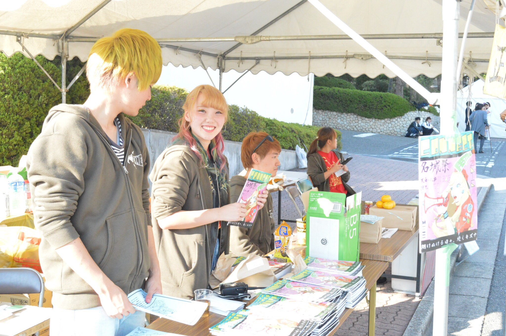

- アクセス
〒468-8502 愛知県名古屋市天白区塩釜口１丁目501
名古屋市営地下鉄鶴舞線 塩釜口駅下車 1番出口より徒歩約4分 。
駐車場は使用できませんので、公共交通機関をご利用ください。
- 企業の方へ

名城大学大学祭実行委員会では大学祭の開催にあたり、企業の皆様にご協賛のお願いをしております。
今年度の協賛形態は以下の通りです。
1.広告協賛
a.動画広告
b.企業ロゴ
2.備品協賛